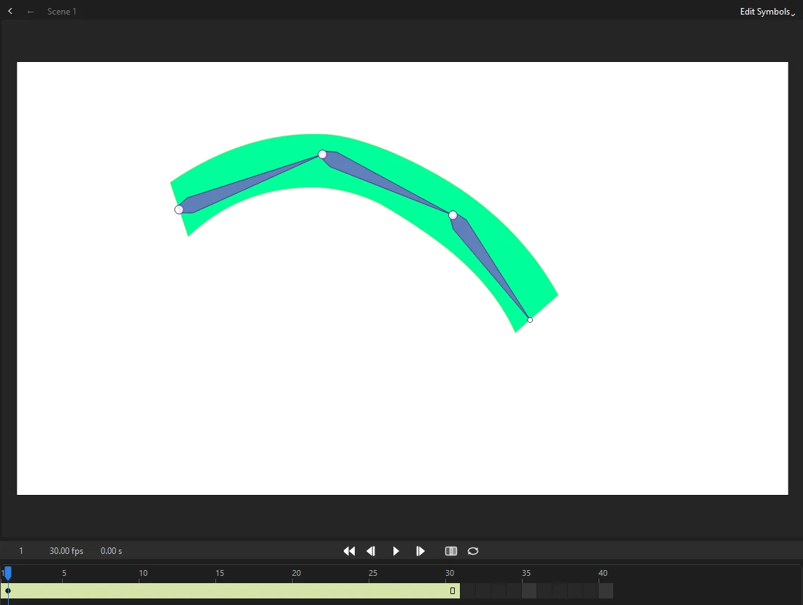
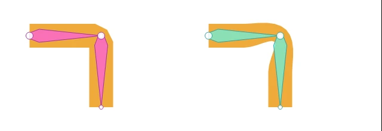
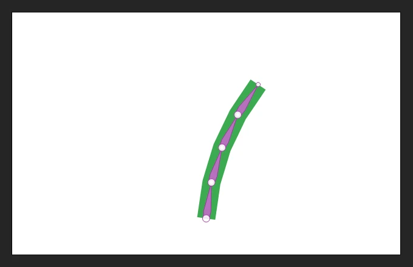
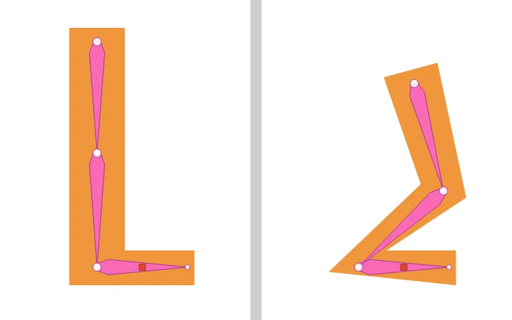
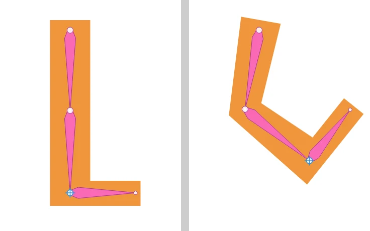
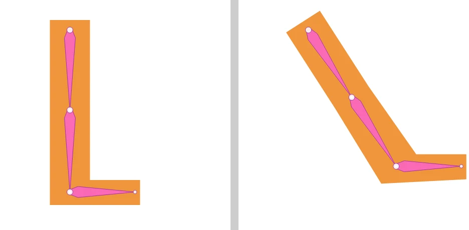
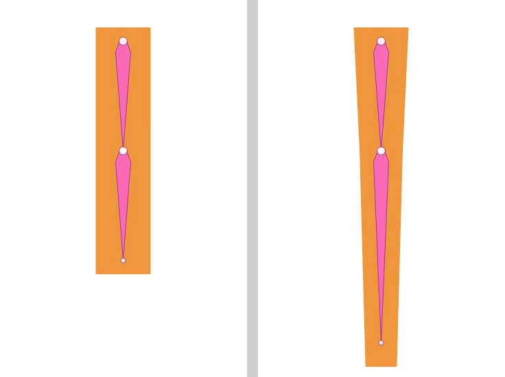
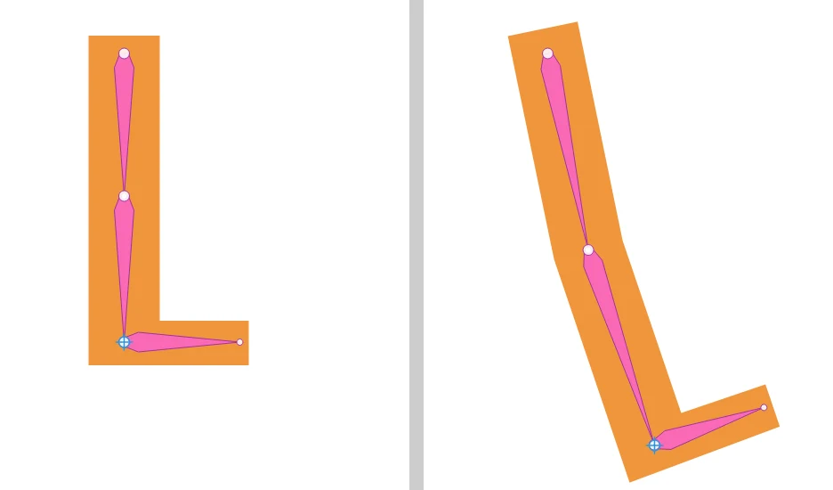

Animation
Bones and inverse kinematics
An armature is a chain of bones inside a shape or between symbols. Drag the end of the chain and the joints bend to follow, which is called inverse kinematics (IK). Build armatures of symbols or bone a shape with the Bone tool, and pose and play them along with the armatures in FLA files.

Building an armature
Use the Bone tool (M) to join symbol instances with bones:
- Drag from a point on one instance to a point on another. The bone runs from where you press to where you let go. Both instances must be on unlocked layers.
- Phoenix puts both instances on a new armature layer, Armature_1, above the first one's layer. Each instance turns about its joint, which becomes its transformation point.
- To grow the armature, drag from any instance already in it to another instance. The new bone starts at that instance's joint, so one instance can branch into several bones. Bones can be added at any time, on any frame of the span: in every other pose the new bone turns with the bone it hangs from. An instance can be in only one armature.
Each bone added is a single step to undo.
Bones inside a shape
The Bone tool also bones a shape, so its outline bends as the bones turn:
- Drag inside a shape, a merged shape or a drawing object, from where the first bone starts to where it ends.
- Phoenix moves the shape to a new armature layer, kept in a library symbol of its own, and binds each of its control points to the nearest bone. A point as near one bone as another, such as one beside the joint between them, follows both.
- To grow the armature, drag from one of its joints. Every point is bound again to its nearest bone.
Binding points with the Bind tool
The Bind tool, in the Bone tool's slot, changes which bones a boned shape's control points follow. It shows the points of every boned shape on the stage: a square for a point that follows one bone, a triangle for one that follows several, and a red outline for one that follows none and so stays where it is.
- Click a bone. The points that follow it turn yellow.
- Click a point to bind it to the bone, as well as to any bones it already follows.
- Shift-click a point to bind it, or to unbind it if it is already bound. Ctrl-click a point to unbind it.
A point bound to several bones follows them evenly. Every frame of the armature is bent again from its first frame by the new binding, and each change is a single step to undo.
A point can also follow one bone more than another. With a bone chosen, Alt-click a point to give that bone a quarter more of it, and Alt+Shift-click to give it a quarter less; the point's other bones share out the rest. The points the chosen bone moves are yellow, paler the less of them it has, and a shared point shows the bone's share beside it (25%, 50%).
Smooth joints
When every point follows a single bone, a bent elbow or knee makes a sharp crease. blends the points near each joint between the bone above and the bone below, so the shape bends in a soft curve, like an arm in a sleeve:
- Move the playhead onto the boned shape's armature layer.
- Choose Smooth Joints, and set Smoothness: how far either side of each joint the blend reaches, as a share of half the shorter bone. A point right across the joint follows both bones evenly, and points further along follow their own bone more and more.
- To smooth one joint only, first click its bone with the Bind tool and turn on Only the joints of the bone chosen with the Bind tool. That smooths the joints at both ends of the bone.
Choose it again with another Smoothness to change it. The armature remembers the smoothness you gave every joint, and when you add a bone and Phoenix binds the points again, it smooths them the same way. Only points that follow just the bones at a joint change, and a shape bound in another app keeps its binding until you smooth it or bind its points yourself.

Joint limits
Click a bone with the Bone tool, without dragging, to set how far the joint at its head may turn. In the Joint Rotation and Spring dialog, turn on Constrain and give the Min and Max angles, measured from the bone above. When you drag the armature into a pose, a limited joint stops at its limit and the other joints turn further to make up the difference.
Springs
The same dialog gives a bone a spring, for a tail, an antenna, ears or a ponytail that swings on its own. With Spring above None, the bone trails behind as the bones above it move and as its own poses change, swings past and settles back where its pose has it. A low spring swings wide and slow, a high one quick and small; Damping says how quickly the swinging dies away, from 0 (it goes on bouncing) to 100 (it settles at once). Springs move the instances of an armature of symbols, and bend a boned shape where its bones swing, the same every time it plays, on the stage, in Test Movie and in exports. The swing is worked into every frame of the armature when you set a spring or change a pose, so the bones swing too, and a span can end swung past its last pose. FLA files keep springs the same way, so an armature with springs from another app plays as it was saved.
Gravity and wind
Springy bones can also hang under their own weight and blow in the wind, with no poses at all: hair and tails droop, grass and plants sway. Move the playhead onto the armature layer and choose :
- Gravity
- How hard the bones are pulled, from None to 100, and the Direction they are pulled in: 90° is straight down, 0° to the right, 180° to the left and -90° up.
- Wind
- How hard the wind blows, and its Direction, measured the same way: 0° blows to the right.
- Gusts
- How much the wind rises, dies down and changes direction a little. Steady wind just holds the bones bent; stronger gusts make them sway and flutter. Gust rate is about how many gusts come each second, and the gusts reach the tip of a chain a moment after its base, so it ripples.
- Variation
- A number that picks the pattern of gusts. The same number always gives exactly the same motion; try another for a different sway, for example to keep two plants from moving in step.
Gravity and wind move only bones with a spring, and how far depends on the spring: a low spring gives way a lot, a high one only a little, and Damping still says how quickly the bones settle. The armature starts the span already hanging, so nothing falls into place on the first frame. The motion is worked into every frame of the armature, as springs are, so it plays the same on the stage, in Test Movie, in every export and in FLA files opened in other apps. When you drag a bone that gravity or wind bends, you pose only the change you make; they keep acting on top of it. Each change in the dialog is one step to undo; set both to None to take them away.

Armature layers
Armatures live on their own layers, and their spans are drawn yellow-green in the timeline. A pose is a keyframe for the whole armature: Phoenix fills in the frames between poses, easing them the way the file says, when you play the document and when you export it. A shape bends from pose to pose, and the instances of a symbol armature turn and move with their joints.
Posing
Bones are drawn in the layer's color as slim shapes with round joints. Then, with the Selection tool:
- Move the playhead to the frame you want to pose.
- Drag a bone. Its tip follows the cursor and the bones above it in the chain bend to reach.
The frame becomes a pose if it wasn't one already, and the frames on either side of it ease into it. Each pose change is a single step to undo.
- Armatures between symbols carry their instances with them on every frame. Posing the first frame of a span moves the instances themselves; posing a later frame moves them only there and in the frames that ease toward it.
- Boned shapes bend the points of the shape, each with the bones it is bound to.
- Springs swing the bones on top of their poses: a boned shape bends where its sprung bones swing, and an armature of symbols carries its instances with them (see Springs). Dragging a bone poses it from where it shows, swing and all.
To move the whole armature, drag the joint at its root (the first joint, where the chain starts). Locked bones stay put while you do, so dragging the hips of a character with its feet locked bends its knees. Alt-drag a bone to turn just that bone, without the bones above it following.
The bone menu
Right-click a bone on the stage, with any tool, for the commands below, and for Joint Rotation and Spring, which opens the dialog the Bone tool does. Each change is one step to undo, and the shape or the instances follow it on every frame.
Locking a bone
A locked bone stays where it is on the stage while you pose the rest of the armature. Lock a foot, then drag the hips: the foot stays planted on the ground and the leg bends to keep it there.
- Move the playhead to the frame where the foot lands, and right-click the foot bone.
- Choose Lock Bone. The bone shows a small red square, and it is locked from this frame on.
- Pose the later frames. The foot stays where it landed on every frame in between, while the hips move.
- On the frame where the foot should lift, right-click it again and turn Lock Bone off. From the last locked pose to this one, the foot is free to move.

Reaching for a target
A bone can reach for a target: the end of the bone, and the bones above it up to the nearest place where the armature branches, turn so the end touches the target on every frame. Right-click the bone and choose from Reach For:
- A Point Here
- The target is a point on the stage, where the bone's end is now. Drag the bone to move the point. Move it on another frame and the point glides from pose to pose in a straight line, with the limb following it, which is handy for a hand sliding along a table or a foot stepping.
- Another bone
- The end reaches for the end of that bone wherever it goes, such as two hands holding one stick.
- Nothing
- The bone goes back to its poses.
The target applies from the frame you set it on to the end of the armature, until you change it on a later frame. The target shows as a blue ring, with a dashed line from the bone when it cannot reach.

Independent angle
Normally a bone turns with the bone above it, as a hand turns with the arm. Turn on Independent Angle in the bone menu and the bone keeps its own angle on the stage instead: a foot stays flat as the leg swings, or a head stays upright as the body leans. Drag the bone itself to change its angle.

Squash and stretch
With Squash and Stretch on, a bone can change length, and its artwork stretches along with it. Alt-drag the end of the bone: it turns toward the cursor and grows or shrinks to reach it. Choose Stretch, Keep Volume to make the art thinner as it stretches and fatter as it squashes, like a rubber ball. Turning the option off puts the bone back to its own length.

IK stretch
IK Stretch lets a bone grow, up to the amount you choose, when its chain has to reach further than it can: a cartoon arm that stretches to grab something just out of reach. Give each bone of the limb IK stretch, then drag its end, or give it a target, past where it could reach. Within reach, the bones keep their own length.

Locks, targets and bone options work with armatures of symbols and with boned shapes. On an armature of symbols, a stretched bone stretches the instance it starts from. Phoenix keeps them in the file as its own settings. What they do is worked into the poses and into every frame of the armature, so other apps that open the file play the same motion, though only Phoenix keeps the bones locked, reaching or stretching when you pose them again.
Pose commands
Right-click a frame of an armature layer, or use , to work with poses directly:
- Insert Pose
- Makes the armature's look on that frame a pose, without moving it, so you can then change the motion from there.
- Copy Pose
- Remembers the armature's pose on that frame, whether or not a pose is there.
- Paste Pose
- Poses the armature on that frame as the copied pose, adding a pose there if there was none. It pastes onto an armature with the same bones, in the same document or another.
- Clear Pose
- Takes away the pose on that frame, so the armature tweens straight from the pose before to the pose after. The first pose stays.
- Gravity and Wind
- Lets gravity and wind move the armature's springy bones (see Gravity and wind).
- Smooth Joints
- Blends a boned shape's points between the bones at each joint for smooth bends (see Smooth joints).
Each is one step to undo; boned shapes bend and symbol instances move as they do when you pose by dragging.
Asset Warp
Asset Warp puppets, where artwork bends around pins, are drawn deformed by their pins, vector and bitmap art alike. A turned pin turns the art right round it, a frozen pin keeps the art round it at its own angle, and a bone between two pins keeps the art along it on the line between them.
Asset Warp tool
Use the Asset Warp tool (Shift+W) to make a puppet and bend it by its pins:
- Click a shape, a bitmap, a group or a graphic symbol instance to make it a puppet, with the first pin where you clicked. Its art goes into a graphic symbol (WarpedAsset_1) inside a puppet symbol (PuppetShape_1), both in the library, and the puppet takes its place. Movie clips and buttons cannot be warped.
- Click the puppet to show its pins. A click on the art where there is no pin adds one there.
- Drag a pin. The art bends around the other pins, which hold their places.
- Shift-drag a pin to turn it, and the art right round it, without moving it. A turned pin shows a tick the way it turned.
- Click a pin and press F to freeze it, or again to let it go: the art round a frozen pin keeps its angle while the pins about it move. A frozen pin is square.
- Click a pin, then Ctrl-click another to join them with a bone, or to take away the bone between them. The art along a bone stays on the line between its pins, like a stiff limb.
- Alt-click a pin, or click it and press Delete, to take it away.
Making a puppet, and each pin change, is a single step to undo. Pins are kept on each keyframe's instance, so a classic tween between two keyframes bends the art from one set of pins to the other. To bend art by handles without making it a puppet, use a deformer.
All armature and warp data is kept when you save, so saved FLA files keep them intact.
A rigging layer.